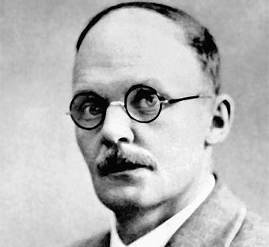

Experimento
Dispersión de Rutherford
En 1911 se realizó en Manchester una experiencia encaminada a corroborar el modelo atómico de Thomson. Fué llevada a cabo por Geiger, Marsden y Rutherford, y consistía en bombardear con partículas alfa (núcleos del gas helio) una fina lámina de metal.
Las partículas alfa se obtenían de la desintegración de una sustancia radiactiva, el polonio. Para obtener un fino haz se colocó el polonio en una caja de plomo, el plomo detiene todas las partículas, menos las que salen por un pequeño orificio practicado en la caja. Perpendicular a la trayectoria del haz se interponía la lámina de metal. Y, para la detección de trayectoria de las partículas, se empleó una pantalla con sulfuro de zinc que produce pequeños destellos cada vez que una partícula alfa choca con él.
El resultado esperado era que las partículas alfa atravesasen la fina lámina sin apenas desviarse. Para observar el lugar de choque de la partícula colocaron, detrás y a los lados de la lámina metálica, una pantalla fosforescente.
Las partículas alfa tienen carga eléctrica positiva, y serían atraídas por las cargas negativas y repelidas por las cargas positivas. Sin embargo, como en el modelo atómico de Thomson las cargas positivas y negativas estaban distribuidas uniformemente, la esfera debía ser eléctricamente neutra, y las partículas alfa pasarían a través de la lámina sin desviarse.
Hans Geiger - 30/9/1882-24/9/1945
Ernest Marsden - 1889-1970
Ernest Rutherford - 1871-1937

Según el modelo de Thomson, las partículas alfa atravesarían la lámina metálica sin desviarse demasiado de su trayectoria:
- La carga positiva y los electrones del átomo se encontraban dispersos de forma homogénea en todo el volumen del átomo. Como las partículas alfa poseen una gran masa (8.000 veces mayor que la del electrón) y gran velocidad (unos 20.000km/s), la fuerzas eléctricas serían muy débiles e insuficientes para conseguir desviar las partículas alfa.
- Además, para atravesar la lámina del metal, estas partículas se encontrarían con muchos átomos, que irían compensando las desviaciones hacia diferentes direcciones.
Pero se observó que un pequeño porcentaje de partículas se desviaban hacia la fuente de polonio, aproximadamente una de cada 8.000 partículas al utilizar una finísima lámina de oro con unos 200 átomos de espesor. En palabras de Rutherford ese resultado era "tan sorprendente como si le disparases balas de cañón a una hoja de papel y rebotasen hacia ti".
Rutherford concluyó que el hecho de que la mayoría de las partículas atravesaran la hoja metálica, indica que gran parte del átomo está vacío, que la desviación de las partículas alfa indica que el deflector y las partículas poseen carga positiva, pues la desviación siempre es dispersa. Y el rebote de las partículas alfa indica un encuentro directo con una zona fuertemente positiva del átomo y a la vez muy densa.
El modelo atómico de Rutherford mantenía el planteamiento de Thomson, de que los átomos poseen electrones, pero su explicación sostenía que todo átomo estaba formado por un núcleo y una corteza. El núcleo debía tener carga positiva, un radio muy pequeño y en él se concentraba casi toda la masa del átomo. La corteza estaría formada por una nube de electrones que orbitan alrededor del núcleo.
Según Rutherford, las órbitas de los electrones no estaban muy bien definidas y formaban una estructura compleja alrededor del núcleo, dándole un tamaño y forma indefinida. También calculó que el radio del átomo, según los resultados del experimento, era diez mil veces mayor que el núcleo mismo, lo que implicaba un gran espacio vacío en el átomo.
Estos hechos no podían ser explicados por el modelo atómico de Thomson, de modo que Rutherford abandonó dicho modelo y elaboró otro, sugiriendo lo que se conoce como átomo nuclear. En 1913 el modelo de Rutherford fué reemplazado por el de Bohr.